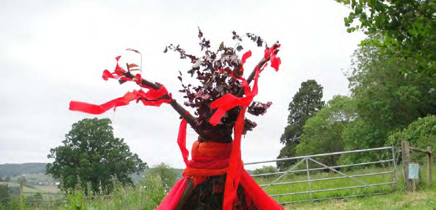

Here is a dialog with Christa Mackinnon. Christa is author of SHAMANISM & SPIRITUALITY IN THERAPEUTIC PRACTICE, An Introduction. She lives and works as a social psychologist and family counselor in Devon, in southwest England. I am honored to introduce Christa Mackinnon to DNJ readers.
David Sparenberg: It is well known that wider interest in matters shamanic developed out of Mercia Eliade’s study, Shamanism. In that foundational text, Eliade provides two key designations of the shaman as “master of ecstasy” and “technician of the sacred.” Since the counterculture of the 1960’s, there has been an uninterrupted outpouring of books on the subject. My own favorite is Shamanic Voices by Joan Halifax, which includes first hand accounts by practicing shamans throughout the world. So there is an established subculture of shamanic seekers and practitioners. Within this context, what is shamanism for a professional therapist in Britain? What is your shamanism? Where do you place it in life and work?
Christa Mackinnon: David, the moment I read your first question, I couldn’t help smiling. We are already ‘in the zone’. Your favorite book is ‘Shamanic Voices’ by Joan Halifax and the first shamanic teacher who crossed my path was a friend of Joan’s and had worked with her.
I also love Halifax’s book. When I read it I really began to appreciate the profound understanding of, and connection to, ‘All there is’, which traditional, indigenous shamans world-over exhibit; I also was quite taken by their incredible range of skills. They were/are not only ‘technicians of the sacred’, visionaries, seers, healers, spiritual leaders, masters of the ecstatic, communicators with natural forces and creatures, overall intermediaries between earth and spirit, they were/are also political leaders, ecologists, storytellers, artists, dancers and more.

I find this is one of the differences between shamanic subculture now and traditional, indigenous shamans. The subculture doesn’t produce people with such vast abilities, which is one reason I am reluctant to call myself a ‘shaman’. Many of us utilize parts of this wisdom heritage and develop, adjust or integrate it. We can lament about the fact that what we now encompass under the term ‘shamanism’ doesn’t always come close to the traditional and indigenous, but I feel that shamanism has survived for so long because it is timeless and can be adapted. Personally, it plays a big part in my work and my private life, which are scarcely distinguishable. It has done so for the last 18 years, when I begun to integrate it professionally. I run countless courses for therapeutic professionals on subjects such as journeying, soul-retrieval, ancestral work, ceremonies and so on, but also facilitate wilderness camps, trance-dance groups and vision quests. I even push for it to be explored within the more conventional field of therapy and medicine. Within my therapeutic professional work, I focus more on integrating the ‘psycho-spiritual’ aspects of shamanism. I still find it difficult to accept that the vast majority of psychologists and therapists in the UK & EU reject shamanism; part of what I see myself called to do is to bring it into the conventional psychotherapeutic and medical community. It is interesting that the therapeutic community is waking up to the fact that we need to address spiritual aspects of the human being, but so far is afraid to take this further than integrating a bit of ‘mindfulness’ into otherwise mainly cognitive-behavioral orientated approaches.
DS: Another well-known classification for the shaman, especially through medical authors such as Jeanne Achterberg and Larry Dossey, is that of “wounded healer.” But not everybody who is wounded spiritually, psychologically, emotionally or physically, has a healing response, although everybody may have the capacity. Not everyone wounded becomes a shaman. Personally, I think that passion and pathos are determinates. But do you find that there is a shamanic personality type? If so, what are some key traits?
CM: I think there is something quite significant in the idea of the ‘wounded healer’, especially the one who has healed herself. In traditional shamanism, as far as I understand it, the wounding often refers to the ‘initiation crisis’ or the ‘call’, and it is profound, in the sense that it is of severe psychic depth. During the initiation process, the body is often quite sick, even comatose, whilst the ‘spirit’ is being taught, challenged, trained, and initiated, before it returns to the body, which then also heals. Healing referred to in this context is about becoming ‘whole’, a far cry from what we in our society see as ‘healing’, which refers mainly to symptom alleviation.
I don’t necessarily think that there is a ‘shamanic personality type’, but believe that there are different reasons that draw people to shamanism. Let’s start with wounding. In contemporary societies, we can say that there is individual wounding, such as we all experience to various degrees. Then there is a kind of collective wounding, which we are subjected to because the road travelled collectively results in disconnected populations in our soul-less societies. Increasing levels of anxiety disorders, depression and violence are indicators of this development. You are of course right, not everyone wounded becomes a shaman.
But in my experience, being drawn to shamanism often takes place through being wounded individually and/or through feeling our collective wounds. If you don’t feel that something is ‘not right’, then you have very little incentive to step off the normal road and travel down a different one. So, yes, I do know from experience that many people who travel the road of shamanism have been wounded. But having said that, as humans we also have the ability to see beyond our individual existence; so now there is a second, rather large group of people drawn to shamanism for ecological reasons. They realize that our most urgent task is to stop destroying the earth and work towards sustainability, and that we can only achieve this if we re-connect individually and collectively with nature, again becoming part of it. Shamanism helps greatly with that. A third group of people seems to come to shamanism via searching for something that makes them feel more alive and connected, helps them to re-connect with vital life forces and community, which we, in our left-brain, artificial and consumer-orientated societies have done our best to dis-connect from. Shamanism seems to open energy gates for people, as it is very physical, very earthy, very active and communal. So, to answer the question, I don’t believe there is a personality type, but I do see several reasons why certain people are drawn to shamanism and others are not.
DS: Searching through your book, there is not much about shamanism and dreaming or shamanic dreams. I admit the subject for me is somewhat problematic. American anthropologist Alfred Kroeber coined the term “dream culture” for particular Native tribes, such as the Mohave, where culture was kept alive through tribal members dreaming mythic narratives and rituals. Traditional Lakota women are often called to “medicine” through beckoning dreams involving visitations from spirit beings and ancestors. The Greek cult of Asclepius, which was popular throughout the Mediterranean over several centuries before Christianity, practiced dream incubation as healing technique. Sometimes in the dreams of alchemists, ancient or contemporary, there are shamanic motifs, even a shamanic core, so that by peeling away the imagery of the alchemist you find the ritual of the shaman.
Then bringing many threads into a skein, I would say—dreaming power objects or animals, spirit guides, ancestors and archetypes could all be elements of shamanic dreaming. But I invite you now to share your experiences and your thoughts on shaman dream traits and shamanic dreaming, and how such can be of healing value to non-tribal and mostly urban-dwelling people today. What can you tell us?
CM: Yes, I do not specifically address ‘shamanic dreaming’ in my book because it has been written for therapeutic professionals of many creeds, and there is only a small minority of therapists and psychologists, mainly Jungians and eco-psychologists, who work with dreams. I also didn’t want to begin explaining in the book the idea of ‘dreaming’ in a shamanic sense. You already outlined much that can be said about ‘shamanic dreaming’, and of course how it overlaps with other forms of ‘work attempted in trance states’, but let me add a few bits before I come to the more individualized, western way of utilizing dreams. If we take into account what you mentioned, and if we look at tribes such as the Kogi in South America, or the Australian Aboriginal’s ‘dreamtime’, then we realize that dreaming in a shamanic sense is at least two-fold: firstly, shamanic dreaming is practiced to access wisdom, insights, guidance, rituals, healing approaches, knowledge, creativity and so on from the wider field, the spirit field; and secondly, shamanic dreaming is also practiced to create ‘reality’ within that wider energetic field, which then manifests in our material reality. So, in a way all ‘work’ undertaken by shamans or tribal members in an altered state of consciousness could be defined as ‘dreaming’. We ‘dream’ our reality into being. The Kogi, for instance, would tell you quite categorically, that this is what they do normally and that without their ‘positively dreaming the world into being’ we would have already ended in complete destruction.
When we use the expression “dreaming” in a westernized, contemporary way, it is for the stuff that happens when we sleep, in contrast to the shaman who dreams deliberately, even if she or he is awake. Here, in a therapeutic environment, we do not use the shamanic way of dreaming for therapeutic purposes, but we do understand that insights and wisdom can arise in dreams and that healing can take place. What we access in dreams is defined as stemming from the personal unconscious or, more rarely, the collective unconscious. But generally speaking, we apply a very limited framework compared to the framework of indigenous, older cultures.
I personally believe that, in comparison to shamans, we have restricted the world we access and live in because we do not access and utilize dream states deliberately. But, I will leave it at that, because your next question, which I have already seen, will give me a chance to go deeper into the whole idea of ‘altered states’.
DS: Ok then, let’s talk about ecstasy—about shaman as master or mistress of ecstasy—and how mantic and other altered states of consciousness can be viewed as therapeutic experience and might be applied in conventional therapeutic settings. This is also a problematic topic for me. We are familiar with trance dancing, tribal-fusion dance, what is called authentic dance, Gabriella Roth’s sweating prayers and Bradford Keeney’s explorations of shaking medicine. Nonetheless, the subject remains problematic, especially in most professional and many public settings. I have attempted to find a place for, and yet set a limit to, ecstasy in relationship to performance in my writings on eco-shamanic actor training. So I am looking to learn something from you. Ecstasy, degrees of shamanic altered states and therapy in contemporary England and elsewhere: what can you say about it?
CM: I mention in my book, rather accusingly, that modern societies are the only societies where trance states are frowned upon, discouraged, sometimes even penalized. With the onset of the age of reason and enlightenment and with the development of science, we began to worship the ‘god of conscious, rational mind’, whilst neglecting, rejecting and belittling the wisdom and insights that stem from altered state experiences. But I believe that trance states are natural states, that we all have an innate longing for altered state experiences and that we haven’t done ourselves a favor by depriving ourselves of the vast reality we can access, the wisdom we can gain, the connection to the wider field in many manifestations we are capable of experiencing by altering our dimensions of awareness and perception. So, trance states, altered states, states of ecstasy, however you want to call them, are something we know very little about, whilst we know quite a lot about ‘conscious mind’, which is the least interesting, the least creative and the least influential state of mind we can be in.
What you said about such states being ‘problematic in most professional and many public settings’ certainly applies in the UK as well. In my book, I describe in-depth what we know about ‘altered states’ as I still find it unbelievable, often infuriating, that even in the field of therapy, these states are seldom seen as valuable. Personally, I think that it’s deliberately produced fear that keeps us ‘away from them,’ even though we all long to be ‘in them’. I say this because each new generation finds ways and means to use mind-altering substances, and as soon as a new one comes along, legislation is created to criminalize its use. Indigenous cultures, especially shamans of many creeds, in many places, use mind-altering plants to produce altered states. I personally think that as long as we are kept on the level of ‘mind’ rather than being encouraged to experience ‘expanded consciousness’, we will, collectively, restrict our development. This is not quite the place to go deeper into the subject, but just briefly one point, to illustrate this opinion: ‘mind’ is based on survival within this material reality and within this body. Mind can therefore be manipulated and controlled as it is, on a very basic level, geared up towards survival in social normalcy, reacting with fight or flight when threatened. Holistic psyche works on a different level. Through altering our state of psyche (soul) we can begin to experience the levels of connective possibilities, and begin to understand that this manifested, material reality is just one reality. We can only imagine the positive changes in thinking, behaving, attitudes and so on if we would, collectively, come to embracing this difference.
DS: On various pages throughout your book, Christa, you write about near death experience (NDE). My next question addresses that. Do you see correlation between the constellation of shamanic dreaming, soul flight and NDE? There is, of course, what is called the “little death” of shamanic initiation; even Shakespeare draws parallels between sleep and death with Hamlet brooding on “what dreams may come.” What connections do you see here to share with Dream Network readers?
CM: I used the Near Death and also dismemberment experiences in my book in an attempt to convey an idea about the extreme level of ‘state altering’ that traditional, indigenous shamans are able to achieve. I also used the ND experiences to make a case for consciousness being non-local or bound by time. Only if we assume that consciousness is non-local and is able to travel outside of the confinements of our physical brain, can we begin to understand shamanic dreaming, soul flight and the idea that we are capable of accessing information from reality’s wider field, as well as creating from within this field. So the Near Death Experience is just one form of ‘state altering’--- albeit, an extreme one.
DS: In Faust, Goethe speaks of the Realm of the Mothers, the dark feminine, to which Faust must journey to attain wholeness. I know that the role of the feminine is important in your shamanism, psychology and ecosophy. That is Earth Wisdom. In closing, would you share something on this subject?
CM: Yes. But I don’t quite understand the ‘dark feminine’ yet and would rather talk about open aspects of the feminine, which we need to honor, integrate and live by. What I do understand is that long ago woman was believed to have a special, magical connection with earth, trees, plants, animals, with the rhythms of nature--- indeed with the rhythm of all life. Why? Because woman gives life, woman nurtures and sustains life, and woman is prepared to lose her own life to give birth. Woman is also patient. She incubates the seed, just as Mother Earth does. She nurtures her young for long periods. Woman is, in that sense, close to nature, to its rhythms and ways. Woman is also close to the divine, the sacred, as nature is the manifestation of the earth-sacred, of life itself. The very basic, but major aspects of the feminine principle are therefore life giving, nurturing, protecting, co-creating and giving of oneself to the young. With this, woman participates in the life of nature as ‘mother’. We are talking archetypal here and therefore we need to go back to basics. The feminine is genetically programmed towards intuiting, emotional connectedness, and communicating in a group, mainly through having and raising children. So, if we take all those basic feminine aspects and look at the world now, we realize that none of them are valued highly. The opposite is the case. Here are a few examples: we don’t nurture earth, we exploit it; we don’t communicate and connect, we use force and pressure, then go to war to dominate and to get what we want. Most of our religious systems are completely based on the masculine, with male deities and hierarchical structures created and occupied by men. Our economic systems are geared towards profit accumulation for the few, rather than communal well-being. On the whole, society belittles emotionality and intuition, preferring what is rational, male. And almost everywhere now, the evolutionary rise of the feminine brings on repressive violence against women.
Yet if we want to solve the earth crisis, rather than being eliminated by the earth—if we want to evolve spiritually as well as in humaneness—we need to redress this imbalance. For a long time to come, we need to focus on bringing into the fore the basic aspects of the feminine—that which is deep, life incubating, life giving, life sustaining and life nurturing. ∞